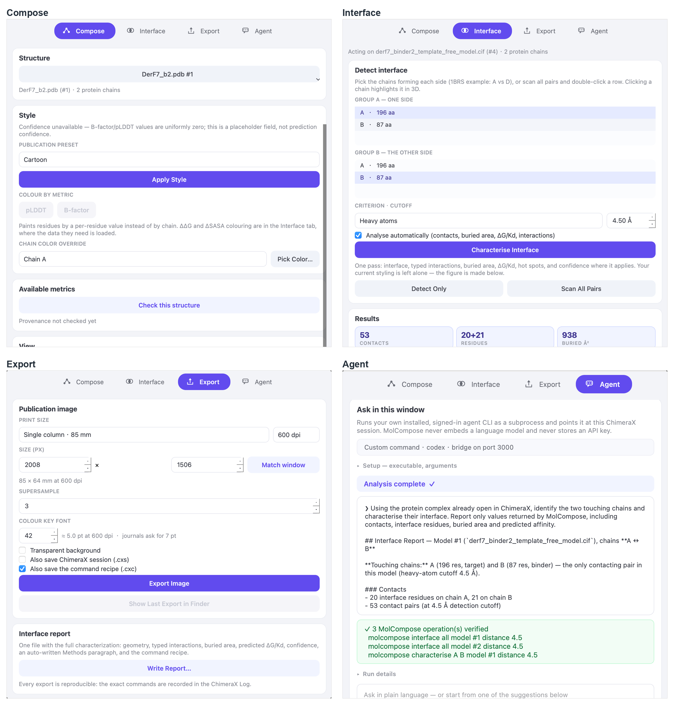

MolCompose is a dockable side panel (menu: Tools → Structure Analysis →
MolCompose) for analysing protein–protein interfaces and composing
reproducible, publication-oriented figures of them. Open structures first with
native ChimeraX functionality (open 1brs or
File → Open); MolCompose never opens files itself and never
changes coordinates, residue numbering, chain IDs, or source files.
Every button runs a canonical molcompose command that is recorded in the ChimeraX Log, so any figure can be reproduced from the Log alone.
The panel has four tabs: Compose, Interface, Export and Agent.

The top of each tab, on a designed binder and its predicted complex: the chain lists, counts and metrics shown are the ones those structures produce, and the Agent tab is one turn that ran. Each tab scrolls past what is visible here.
gmx_MMPBSA's per-residue decomposition — what each residue
contributes to binding — and asks which of the file's chains is which of the
structure's, because GROMACS usually renames them. Its values are negative
where a residue is favourable, the opposite sign to ΔΔG, and it is
not the interface's ΔG: these totals are not comparable with the
predicted ΔG in Results.
gmx_MMPBSA is the program's name, and it writes
FINAL_DECOMP_MMPBSA.dat whichever solvation model was run — so
the file name does not say which method produced the numbers. Generalized Born
is MM/GBSA and Poisson–Boltzmann is MM/PBSA; they are
different methods and disagree by several kcal/mol. A run configured for both
writes the decomposition twice, and MolCompose asks which to read rather than
taking whichever came first. The colour key and the hot-spot ranking are then
labelled with the method that was actually used. Load RMSF… reads
gmx rmsf -res output — how much each residue moves over the
trajectory — and asks which chains the file's blocks are, because
gmx restarts its numbering at each one. Fluctuation is not a
contribution: a residue that moves a great deal may be a loop nowhere near the
interface.
MD repairs the structure before it runs, so load the repaired PDB rather than the deposited entry — otherwise the residues do not line up. RMSF refuses to load when the counts disagree; a decomposition whose residue names happen to match would load onto the wrong residues without complaining.
The Agent tab exposes the same validated commands to an AI agent in two
ways. Both need the bridge started from that tab
(remotecontrol rest) and the molcompose-mcp server
installed (pip install molcompose-mcp).
claude or codex) is found on your PATH, or when you
point the panel at one. It runs your already-signed-in CLI as a
subprocess and points it at this session, so everything stays in one window.
MolCompose never embeds a language model and never stores an API key; the
command it runs is printed in the chat log, and so is every MolCompose command
the turn issued.An agent reaches MolCompose through the same validated, logged commands as the buttons in this panel, plus a small allow-list of display-only native commands, and the panel reports the operations it verified rather than the agent's account of them. Every figure it exports carries the full command recipe and an agent-provenance record.
While the bridge is running, ChimeraX accepts commands on 127.0.0.1 without authentication — from the agent and from anything else on this computer. That is a property of ChimeraX's REST control rather than of MolCompose, and nothing in this tool changes it, so stop the bridge when you are not using it.
open 1brsAlmost nothing here is MolCompose's own idea. Every number below is somebody else's published method, and reading it correctly means knowing which one and under what assumptions. MolCompose's contribution is that they are computed on one interface, under criteria it states, and recorded so the result can be replayed.
| What the panel shows | Whose method, and what it assumes |
|---|---|
| Interface residues, contacts | Geometry, computed here. A residue is at the interface when it meets the criterion and cutoff shown in Detect interface — heavy atoms at 4.5 Å by default. There is no standard definition, so the one used is always printed beside the count. |
| Buried surface area (ΔSASA) | Solvent-accessible surface from ChimeraX's own measure sasa
(Pettersen et al. 2021), taken as ½[(SASAA +
SASAB) − SASAAB]. The reference PRODIGY
implementation uses freesasa with ProtOr radii, so absolute values differ
slightly from that server's. |
| Predicted ΔG and Kd | PRODIGY's IC-NIS model (Vangone & Bonvin 2015; Xue et al. 2016): a linear fit over contact counts binned by residue polarity, at a fixed 5.5 Å contact shell independent of the cutoff used for display. It is an empirical estimate on a single conformation — the softest number the panel reports — and it was fitted on rigid-body complexes. |
| Typed interactions | Salt bridge, hydrophobic, π-stacking, cation–π and disulfide, detected with distance and geometry criteria following PLIP (Adasme et al. 2021). Each type's threshold is a command keyword, so a figure can state what it drew. |
| DockQ, and its CAPRI class | DockQ (Mirabello & Wallner 2024). Requires a reference structure, and is only meaningful when the chain mapping between model and reference is right — which is why the panel makes you choose it. |
| pLDDT, PAE | AlphaFold's own per-residue confidence and predicted aligned error (Jumper et al. 2021), read from the prediction's files. pLDDT is read from the B-factor column, which is a convention, not a guarantee: on an experimental structure that column is displacement, and the panel treats them as different metrics for that reason. |
| pDockQ | Bryant, Pozzati & Elofsson 2022. Defined on a Cβ interface at 8 Å, which MolCompose measures for it regardless of the cutoff on screen. |
| pDockQ2, ipSAE, LIS | Later interface-confidence scores over the PAE matrix — ipSAE is Dunbrack 2025. All three answer "is this interface predicted confidently", not "is it correct". See the manuscript's reference list for the full citations. |
| Predicted ΔΔG | Whatever predictor produced the file you load; MolCompose runs none of them. Pythia and PythiaStudio output is read directly, anything else through a generic table. Positive means a substitution is destabilising. |
| MM/PBSA per-residue contribution | gmx_MMPBSA's decomposition, computed by you over an MD trajectory and read here. Negative means a residue contributes favourably — the opposite sign to ΔΔG. Absolute MM/PBSA binding energies are not reliable: they carry no entropy term and move with the internal dielectric and the salt model, so the defensible use is relative, within one system or between systems computed identically. |
| Colour scales | ColorBrewer's diverging and sequential ramps. The AlphaFold confidence bands use AlphaFold's own four colours, so a MolCompose figure and an AlphaFold viewer agree about what a colour means. |
| Sequence colouring | Written as SCF, the format ChimeraX's own Sequence Viewer reads. |
Full citations are in the accompanying paper. If you publish a figure or a number from this panel, cite the method that produced it as well as MolCompose — the report written by Write Report… lists the ones it used.